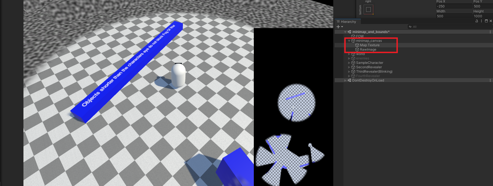

Minimap Generation
Minimap generation produces a fog texture you can draw on top of a UI map, so players can see explored areas and unit line of sight on their map.
Important
The minimap requires a fog texture, so you must set World Bounds to map the texture to your world.
Setup
- Enable Use Mini Map on the Fog Of War World.
- Define your World Bounds.
- Provide the fog texture to your UI in one of two ways:
- Assign a reference to a UI Raw Image on the Fog Of War World, or
- Fetch the texture in code with
GetFOWRT()and apply it to your own map material/UI.

Texture Resolution
The fog texture resolution is controlled by Fow Res X and Fow Res Y. Higher resolutions look sharper on the map but use more memory.
In Code
using FOW;
using UnityEngine;
using UnityEngine.UI;
public class MinimapBinder : MonoBehaviour
{
public RawImage minimapImage;
void Start()
{
minimapImage.texture = FogOfWarWorld.instance.GetFOWRT();
}
}